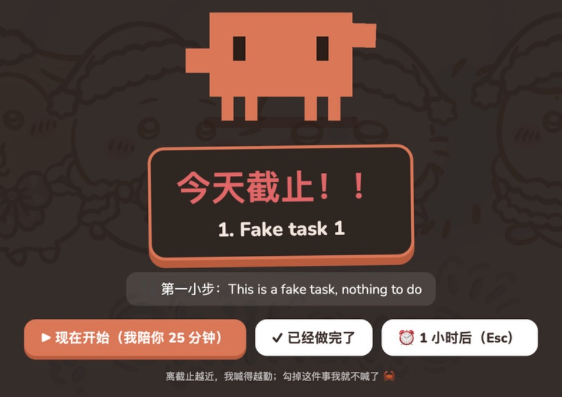
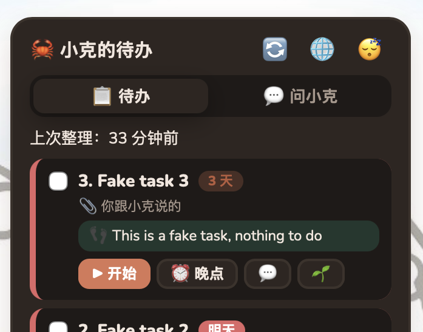
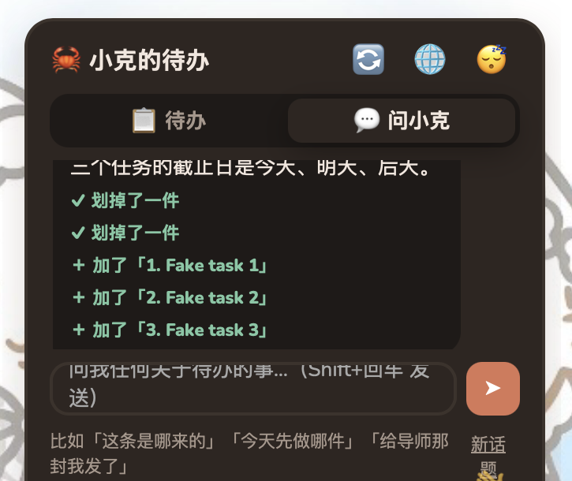
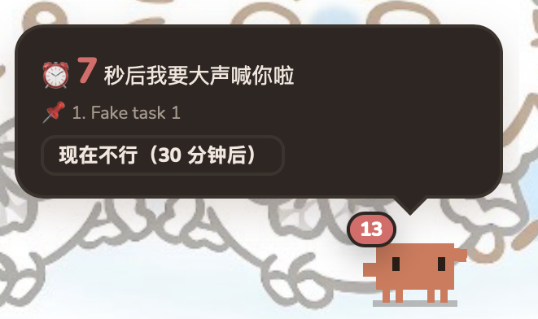

Personal project · 2026
Desktop to-do assistant
A small pixel crab on my macOS desktop that regularly reads my recent Claude Code sessions and my university course calendar, finds the things I still need to do, and reminds me before they are due.
JavaScript / Node.js / Swift / Claude Code CLI




Why I made it
I missed an internship application deadline. The information was already somewhere on my computer, in my AI conversations, emails and course pages, but I had to remember to go and look. I wanted a tool that brings tasks to me instead of waiting for me to find them.
How it works
A local Node.js server regularly collects three sources: my recent Claude Code sessions (where I often work through emails and applications), Claude’s saved memory notes, and my Moodle course calendar. It asks Claude, through the command-line tool with all tools turned off, to list only the things I still need to do myself. Deadlines from Moodle take priority over dates mentioned in conversation. Each task gets a deadline, a one-line note on where it came from, and a first step small enough to start in two minutes. A native Swift window keeps the crab on the desktop.
Product rules I set
Always visible: the crab stays on the desktop, so I never have to open an app to see my list.
Nothing disappears on its own: when a deadline passes, the crab asks whether I did it instead of silently deleting it.
Reminders follow me, not the clock: they wait until I am actually at the computer.
Louder as the deadline gets closer: in the last days, a full-screen reminder appears and can start a 25-minute focus session straight away.
My part
Claude Code wrote the code. I came up with the idea, set the product rules above, used it every day, tested each version and reported bugs to fix.
What I’d do next
Session files can contain text copied from web pages and emails, so they could carry prompt-injection attempts. Running the summariser without tools is a first step; next I’d test how well it ignores instructions hidden in that text.